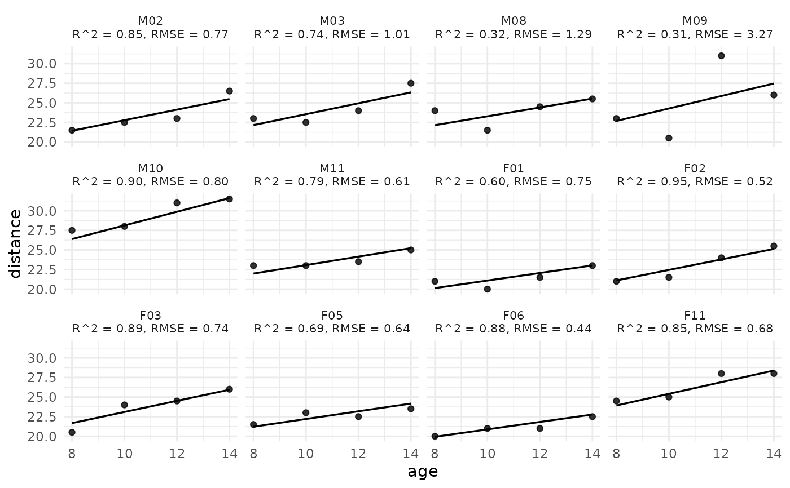

Plot Observed and Fitted Individual Trajectories From a Multilevel Model
Source:R/plot_trajectories.R
plot_trajectories_fitted.RdGiven a fitted lme/nlme (nlme) or lmer
(lme4) model, plots each subject's observed values and fitted curve
on a smooth time grid, faceted one panel per subject. Per-subject \(R^2\)
(squared correlation between observed and fitted values) and root-mean-square
error are computed and attached to the returned ggplot2 object as the
quality_of_fit attribute.
Usage
plot_trajectories_fitted(
model,
id = NULL,
time = NULL,
outcome = NULL,
ids = NULL,
n_random = NULL,
pct_random = NULL,
n_grid = 100,
show_points = TRUE,
point_size = 1.5,
linewidth = 0.6,
alpha = 0.8,
palette = "okabe_ito",
nrow = NULL,
ncol = NULL,
show_quality = TRUE,
title = NULL,
xlab = NULL,
ylab = NULL,
seed = NULL
)Arguments
- model
A fitted model object of class
lme,nlme, orlmerMod.- id, time, outcome
Optional character names of the ID, time, and outcome columns. When
NULL(the default), each is auto-detected from the model object: the outcome is the response variable in the formula, the ID is the first random-effect grouping factor, and time is the first fixed-effect predictor. Override these when the auto-detection is wrong.- ids, n_random, pct_random
Subject-subsetting options identical to those of
plot_trajectories; at most one may be supplied.- n_grid
Integer. Number of points used to draw each subject's smooth fitted curve (default
100).- show_points
Logical. Whether to draw the observed values (default
TRUE).- point_size, linewidth, alpha, nrow, ncol
Visual / layout controls.
- palette
Character string naming the color palette; the fitted curve is drawn in the palette's primary color. Defaults to
"okabe_ito", base R's colorblind-safe Okabe-Ito palette;"tableau"is also available.- show_quality
Logical. If
TRUE(the default), each panel strip text includes the subject's \(R^2\) and RMSE.- title, xlab, ylab
Optional plot labels.
- seed
Optional integer random seed used when
n_randomorpct_randomis supplied. Defaults toNULL, which leaves the user's current RNG state intact; supply an integer for reproducible subject sampling.
Value
A ggplot object. The per-subject quality-of-fit
data.frame (columns: id column, r_squared, rmse) is
attached as attr(<plot>, "quality_of_fit").
Details
Modernizes the original vit_fitted() function by:
returning a ggplot2 object instead of writing to graphics devices,
attaching per-subject quality-of-fit as an attribute rather than assigning it to the global environment via
<<-(a serious side effect of the original),drawing a smooth fitted curve from a per-subject time grid via
predict(..., re.form = NULL)for lme4 fits andpredict(..., level = 1)for nlme fits,correctly identifying lme4 fits (which use class
lmerMod, notlmer).
See also
Other plotting:
plot_R2(),
plot_cfa_k(),
plot_ci(),
plot_equivalence(),
plot_irt_information(),
plot_mediation_mbco(),
plot_regions_of_significance(),
plot_smd(),
plot_trajectories(),
power_equivalence_md_plot()
Other within-subjects analysis:
anova_within(),
anova_within_two_way(),
epsilon_corrections(),
mauchly_test(),
pairwise_within()
Author
Ken Kelley kkelley@nd.edu
Examples
# \donttest{
# nlme: linear growth in tooth distance over age (Orthodont, 27 children).
fm_nlme <- nlme::lme(distance ~ age, random = ~ age | Subject,
data = nlme::Orthodont)
plot_trajectories_fitted(fm_nlme, n_random = 12)

# lme4: reaction time over sleep deprivation days (sleepstudy, 18 ppl).
fm_lme4 <- lme4::lmer(Reaction ~ Days + (Days | Subject),
data = lme4::sleepstudy)
p <- plot_trajectories_fitted(fm_lme4)
#> Warning: the ‘findbars’ function has moved to the reformulas package. Please update your imports, or ask an upstream package maintainer to do so.
attr(p, "quality_of_fit") # per-subject R^2 and RMSE
#> Subject r_squared rmse
#> 1 308 0.6815132 43.158406
#> 2 309 0.4011314 9.007368
#> 3 310 0.7175444 12.147523
#> 4 330 0.1580405 21.508880
#> 5 331 0.3425145 21.972777
#> 6 332 0.2028791 54.505975
#> 7 333 0.8473896 11.725514
#> 8 334 0.7855956 18.517020
#> 9 335 0.3975776 12.627108
#> 10 337 0.9333963 15.011870
#> 11 349 0.9053282 13.890654
#> 12 350 0.8686035 22.928632
#> 13 351 0.4517983 20.572395
#> 14 352 0.7445483 22.958867
#> 15 369 0.8412265 14.164425
#> 16 370 0.8525069 23.170270
#> 17 371 0.5807206 22.441078
#> 18 372 0.9118031 10.257194
# }